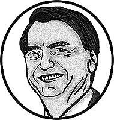
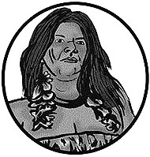
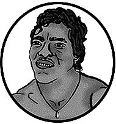
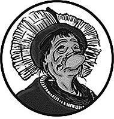

Temps de Lecture 5 min.
écrit et illustré par Plume Hecquard,
en soutien à survival Internationnal.
Floresta (forêt en brésilien) est une interface ayant pour but d'informer et de sensibiliser le lecteur à la cause
des peuples d'Amazonie qui luttent différemment contre les gouvernements voulant leur imposer la monoculture.
« L'humanité s'installe dans la monoculture ; elle s'apprête à produire la civilisation en masse,
comme la betterave.
Son ordinaire ne comportera plus que ce plat. »
Tristes Tropiques (1955) de Claude Lévi-Strauss
La forêt amazonienne est la plus grande zone de forêt ancienne tropicale
de la planète. Véritable trésor de biodiversité, elle compte plus de 24 millions d’habitants dont des centaines de milliers issus des peuples autochtones.premier contact avec les Yanomamis en 1940 Avec l’arrivée au pouvoir de la force politique ultra-conservatrice
et réactionnaire de Bolsonaro, les adversaires des droits des Amérindiens
sont aujourd’hui en position de force. De ce fait, ils cherchent à réaliser
l’un de leurs objectifs principaux : l’affaiblissement et si possible la réduction des protections données aux « terres indigènes », qui représentent
aujourd’hui 13,76 % du territoire du Brésil. Cependant, depuis la constitution
de 1988, les territoires dits « indigènes » sont protégés, comme celui des Yanomamis qui recouvre environ 96 500 km² 1977 : le régime millitaire brésilien veut construire une route passant dans le territoire des Yanomamis de forêt. Cette liste des territoires
à délimiter augmente régulièrement avec les ethnies dites « ré-émergentes »
qui décident, au vu du nouveau contexte, de revendiquer à nouveau leur indigénéité. Or, de tels mouvements sont vus avec suspicion par les opposants qui n’y voient qu’un stratagème utilisé par les peuples pour s'approprier certains territoires. Cette situation a créé une grande animosité envers les Amérindiens qui devient aujourd’hui critique car elle est cautionnée par
les pouvoirs politiques du Brésil. On a pu compter 17 assassinats d’Amérindiens liés à des conflits fonciers en 2017(CIMI). De plus, les territoires indigènes
se trouvent au cœur de la forêt Amazonienne qui est de plus en plus surexploitée : braconnages, feux de forêt etc.1980 : les terres des Yanomamis sont envahies par 40000 orpailleurs

3712
Publications
15,9 m
Abonnés
459
Abonnements
Jair M.Bolsonaro
Personnalité publique
Président de la République Fédérale du Brésil
Brasilia, Brazil
17 assassinats d’Amérindiens liés
à des conflits fonciers en 2017 (CIMI)
Durant les quarante dernières années, 800 000 km² (l’équivalent d’une fois et demie la France) de forêt amazonienne ont été détruits. En 2009, Greenpeace avait publié une étude démontrant que l‘élevage bovin était responsable de 80 % de la déforestation amazonienne,
ce qui représentait 14 % de la déforestation annuelle
de la planète. C’est pour tout cela qu’il est devenu
plus que nécessaire pour les habitants de cette fôret1980 : l'invasion cause la mort de 15% de la population des Yanomamis
de sortir de l’ombre pour défendre leur terre. décimée par le paludisme et d'autres maladies infectieuses
« Nous, Gardiens, défendons les droits de notre peuple et défendons la nature pour nous tous. Trois de nos Gardiens ont été assassinés. Il faut que la terre soit protégée pour de bon. »
Olimpio Guajajara,
coordinateur des Gardiens de l’Amazonie
Il est naît alors une catégorie de « Chefs autochtones »En 2010, Davi Kopenawa et Bruce Albert publient La Chute du Ciel : Paroles d’un chaman Yanomami, un témoignage exceptionel de Davi Kopenawa, chaman et porte-parome des Indiens Yanomamis, qui sont
des personnalités ayant décidées de sortir des forêts pour défendre les droits de leur peuple. Au fur et à mesure, leurs voix se sont
faites entendre à l’international et ils ont pu avoir leur place au sein d'organismes locaux. En 1990, née une convention de la nature
qui décide d'obliger les états à prendre en compte une catégorie d’acteurs dont les pratiques « traditionnelles » sont présentées comme essentielles pour la conservation de la biodiversité :
les « communautés locales et autochtones ». Les peuples
autochtones amérindiens ont alors su saisir les opportunités
offertes par ces nouveaux enjeux. Les Chefs sont alors présents
dans de nombreuses négociations et veillent à faire avancer
leurs revendications politiques, identitaires et territoriales à travers la reconnaissance de leurs droits 1978 création de la Commission
Pro-Yanomami (CCPY) : ONG pour la défense des territoires Yanomamis sur les ressources biologiques
et de leurs savoir-faire « traditionnels ».
Le concept de peuple autochtone s’est alors profondément transformé. Il sert désormais davantage à promouvoir ces populations en tant que détenteurs de savoir-faire ayant démontré leur pertinence en matière de gestion durable des ressources naturelles et de protection de la biodiversité. Ce nouveau positionnement
de la catégorie « peuples autochtones » commence à avoir des effets sur l’équilibre relatif entre les États et leurs minorités ethniques
face par exemple aux entreprises ou aux lobbies intéressés par l’exploitation des ressources biologiques issues de la nature
ou par l’utilisation des savoir-faire locaux. Malgré cela, les peuples autochtones sont toujours en lutte permanente pour la sauvegarde de leur territoire Amazonien. Mais leur notoriété leur permet d'avoir
un soutien plus fortleur territoire est reconnu par décret présidentiel en 1992. internationalement et donc, de pouvoir continuer à se battre contre les politiques évangéliques et réactionnaires.
« Les populations indiennes ou indigènes sont entrées dans une phase d’organisation
socio-politique particulièrement dynamique dès les années 1980, tandis que se multipliaient les conflits liés à la terre, tout d’abord autour de la délimitation légale de territoires,
puis autour de l’exploitation des ressources naturelles non renouvelables, comme le pétrole et le gaz naturel. »
Revue Outre-Terre (2019)

3251
Publications
231 K
Abonnés
1245
Abonnements
Sonia Guajajara
Personnalité publique
soutenir les peuples indigène
Brasilia, Brazil

+ de 100
Publications
#paulopaulinoguajajara

48
Publications
3869
Abonnés
171
Abonnements
Instituto Raoni-IR
Organisation non gouvernementale (ONG)
Organisation Indigène Tapayuna
Sônia Guajajara,
est l'une des porte-paroles du mouvement indigène au Brésil.
Elle a notamment dénoncé les violations des droits
des populations indigènes dans le cadre de grands projets
de barrages hydroélectriques en Amazonie, comme celui
de Belo Monte.
Le militant indigène Paulo Paulino,
membre de la tribu des Guajajara et leader du groupe
de défense de l’Amazonie « Les gardiens de la forêt »,
a été tué lors d’une altercation avec des trafiquants
de bois le vendredi 1er novembre 2019, dans la région
de Arariboia, dans l’Etat du Maranhao.
Raoni Metuktire,
est l'un des grands chefs du peuple kayapo vivant au cœur
de Capoto-Jarina1 (terre indigène protégée sur le territoire
du Brésil) et une figure internationale emblématique de la lutte pour la préservation de la forêt amazonienne et de la culture indigène.Il atteint sa notoriété internationale en 1989, en faisant une tournée avec le chanteur Sting dans 17 pays qui lui permet
de diffuser son message à l'échelle planétaire. Aujourd'hui encore, il continue de militer à travers le monde pour
la sauvegarde de la forêt Amazonienne et se bat contre
la politique de Bolsonaro.
En février 1989 la rencontre de Altamira a rassemblé 3 000 personnes, dont 650 Indiens
de quatorze peuples différents, 150 journalistes et de nombreuses associations
pour manifester un refus catégorique d’équipement et d’aménagement
hydroélectrique du cours du Xingu [ISA, 2015].
Le groupe de défense des Gardiens de la forêt a été créé en 2012
à l’initiative des Indiens guajajara, las de voir leurs terres rongées par des coupes illégales. Cette milice mène notamment des patrouilles armées dans la réserve d’Arariboia, où vivent quelques 5 300 Indiens répartis sur 4 130 kilomètres carrés. Les membres du groupe transmettent notamment les données GPS de zones où sont retrouvés des troncs découpés et viennent en aide aux pompiers lors d’incendies de forêt. Ils détruisent également les campements illégaux des bûcherons qui exploitent abusivement cette partie de la forêt
amazonienne, officiellement placée sous protection du gouvernement brésilien.
Parmi leurs autres initiatives, il y a aussi la défence
des peuples dits «non-contactés» comme les Awas. En effet,
certains autochtones n’ont aucun lien avec notre monde et leur présence sur les terres d’Amazonie n’avait jamais été prouvée
jusqu’à récemment. Les Guajajara ont pris l’initiative de les filmer
pour révéler leur existence au monde afin de pouvoir créer
une lutte pour leur protection avec le soutien de certaines associations internationnales. 1980-1985 : campagne de vaccination pour protéger les Yanomamis des maladies venant de l'extérieur
« Nous n’avions pas la permission des Awá de filmer mais nous savons qu’il est important d’utiliser ces images car, si nous ne les montrons pas au monde entier, les Awá seront tués par des bûcherons.
Nous devons montrer que les Awá existent et que leur vie
est en danger. Nous utilisons ces images comme un appel au secoursEn 1993, seize Indiens sont tués dans le village de Haximu (Venezuela). et nous appelons
le gouvernement à protéger la vie de nos voisins qui ne veulent pas de contact avec
des personnes extérieures. »
Millitant Guajajara
La tribu des Awas
peuple le plus menacé au monde
Les Awá connaissent intimement la forêt. Chaque vallée, chaque cours d’eau, chaque sentier est inscrit dans leur esprit. Ils savent où trouver le meilleur miel, quels arbres de la forêt vont donner
les prochains fruits et quand le gibier pourra être chassé. Pour eux, la forêt est la perfection : ils ne peuvent imaginer que l'on puisse
la développer ou l’améliorer.
Les ressources considérables dont regorge le sous-sol brésilien ont permis un miracle économique.
Sept milliards de tonnes de minerais de fer gisent sous la mine
de Carajás à 600 km à l’ouest du territoire awá. Il s’agit de la plus grande mine de fer de la planète. Des trains de plus de 2 km,
parmi les plus longs du monde, circulent jour et nuit entre la mine
et l’océan Atlantique. Sur leur route, ils ne passent qu’à quelques mètres des forêts où vivent encore les Awá isolés.
Lorsque la voie de chemin de fer de 900 km a été construite
dans les années 1980, les autorités ont décidé de contacter
et de sédentariser les Awá dont le territoire était coupé par la voie. Le désastre a suivi sous la forme du paludisme et de la grippe :
sur les 91 membres d’une communauté, 25 en étaient morts quatre ans plus tard. Aujourd’hui, la voie de chemin de fer amène des étrangers qui convoitent les terresEn 2018, Jair Bolsonaro est élu président du Brésil
et menace de revenir sur
la démarcation du territoire Yanomami. et braconnent le gibier sur
le territoire de la tribu.
Les Awá qui vivent sans aucun
contact avec le monde extérieur
sont l’un des derniers peuples
isolés de la planète
et la plupart
souhaite le rester.
« Si vous détruisez notre forêt, vous nous détruisez aussi »
2020, Un indien Yanomami
de 15 ans décède du coronavirus.
Les Chefs Yanomami soupçonnent que des chercheurs d'or illégaux soient résponsable de l'introduction de ce virus
dans leur tribu
Takia Awá.